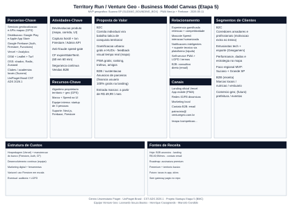

PDF: no Chrome ou Edge → Ctrl+P → Salvar como PDF. Papel recomendado: A4 horizontal ou A3 horizontal na primeira página (canvas).
Descarregar:
SVG (imagem)
Quadro só HTML
Markdown (doc)

BMC_TerritoryRun.svg).Artefatos no repositório:
BMC_TerritoryRun.svg — canvasBMC_TerritoryRun.html — só o quadroDOC_BMC_ModeloNegocios.md — versão MarkdownBMC_TerritoryRun_Completo.html — este documento (canvas + texto)B2C (usuário final — gratuito)
SUZANO_BOUNDING_BOX (regions.ts, DOC_Regions).B2B (pagante — receita)
Justificativa: segmentação de mercado alinhada à narrativa Venture Geo; âncora técnica do MVP em Suzano — marketing-landing.tsx.
Para o corredor (B2C)
Para a marca (B2B)
patrocinio@venturegeo.com.br.Justificativa: rotas em DOC_TelasIndex; copy B2B na landing.
Texto sintético para o quadro (lista acordada):
Complemento técnico-documental: entrada / — DOC_TelaHome, app/page.tsx; use-install-prompt, README; ícones e links na landing.
Complementares: marketing de proximidade (Suzano / Grande SP); contato B2B patrocinio@venturegeo.com.br; rotas autenticadas — DOC_TelasIndex.
Justificativa: o repositório comprova Vercel + PWA; “aplicativo mobile”, neste estágio, materializa-se como PWA instalável, sem binário publicado nas lojas.
B2C: experiência gamificada com foco em retenção e competitividade (ranking, territórios, amigos); interação humanizada com o mascote Speed (landing); notificações inteligentes e suporte técnico via plataforma (/ajuda, canais na app); self-service (DOC_FirebaseAuth); LGPD.
B2B: consultivo direto (e-mail), pacotes na landing.
Justificativa: combinação de comunidade digital já suportada pelo código com a persona Speed; sem call center 24/7 no repositório.
Atual (landing): patrocínios e anúncios B2B — a partir de R$ 49,99/mês; contato patrocinio@venturegeo.com.br.
Roadmap (sem cobrança no código): assinatura mensal premium; modelo freemium (uso gratuito + conquista de territórios na modalidade básica); taxas por serviços no aplicativo e itens de personalização.
Outras hipóteses: eventos patrocinados; white-label.
Justificativa: sem gateway de pagamento no package.json — DOC_DependenciasNPM.
lib/territory, transactions.ts, GPS + mapa — DOC_FuncoesIndex.Justificativa: núcleo diferenciador + plataforma técnica documentada.
app/, components/, lib/).Natureza: orientada a valor + sensível à escala na nuvem.
| Ligação | Como se reforça no projeto |
|---|---|
| Segmentos (Suzano) ↔ Canais locais | Geofence em código; marketing físico coerente. |
| Proposta B2C ↔ Funcionalidades | Mapa, corrida, ranking, amigos, troféus implementados. |
| Proposta B2B ↔ Receita | Copy de patrocínio na landing com preço e contato comercial. |
| Recursos (Firebase) ↔ Custos | Mesmo fornecedor gera valor e custo variável. |
| Atividades (scheduler) ↔ Proposta | Expiração sustenta dinâmica do jogo. |
| Canais PWA ↔ Proposta | Instalação sem loja reduz fricção B2C. |
Esta entrega de documentação não altera serviços nem hooks; sem novos logs — ver DOC_LogsIndex. Sem código executável novo; superfície de ataque inalterada — SEC_Geral.
Referências bibliográficas segundo a ABNT NBR 6023 (ordem alfabética). Citações no texto segundo a ABNT NBR 10520.
ASSOCIAÇÃO BRASILEIRA DE NORMAS TÉCNICAS. NBR 10520 — Informação e documentação — Apresentação de citações em documentos — Procedimento. Rio de Janeiro: ABNT, 2023.
ASSOCIAÇÃO BRASILEIRA DE NORMAS TÉCNICAS. NBR 6023 — Informação e documentação — Referências — Elaboração. Rio de Janeiro: ABNT, 2023.
OSTERWALDER, Alexander; PIGNEUR, Yves. Business model generation: a handbook for visionaries, game changers, and challengers. Hoboken: John Wiley & Sons, 2010.
VENTURE GEO. Territory Run [recurso eletrônico]. Repositório de código-fonte. GitHub, [s.d.]. Disponível em: https://github.com/VentureGeoOficial/territory-web-app. Acesso em: 11 maio 2026.
Nota: arquivos internos (Docs/*.md, app/*.tsx) são documentação técnica anexa; se a banca exigir, inclua hash de commit ou capturas na versão impressa.
{kind=link}